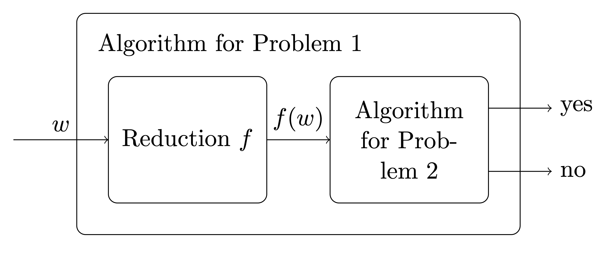

Reductions from K
In this lab we consider the RACSO exercises in the section K.
First we revise the following “theory-bits”:
Many-one reductions
Definition 1 (Many-one reduction) Given two languages L_1 and L_2 over an alphabet \Sigma, a many-one reduction from L_1 to L_2 (denoted as L_1\leq_m L_2) is a total computable function f \colon \Sigma^* \to \Sigma^* such that for every x\in \Sigma^*,
x\in L_1 if and only if f(x)\in L_2.
Schematically a many-one reduction between L_1 and L_2 can be though as follows. Let Problem i be the problem of deciding whether an input is in L_i. A many-one reduction gives a way to construct an algorithm to solve Problem 1 given an algorithm for Problem 2.

Theorem 1 (Properties of many-one reductions)
- \leq_m is a preorder, i.e. it is reflexive and transitive
- if L_1\leq_m L_2 then L_1^c\leq_m L_2^c
- suppose L_1\leq_m L_2, then
- if L_2\in \mathtt{R} then L_1\in \mathtt{R}
- if L_2\in \mathtt{RE} then L_1\in \mathtt{RE}
- if L_2\in \mathtt{coRE} then L_1\in \mathtt{coRE}
RACSO exercises
In the following exercises it is important not only to write down a reduction from \mathsf{K} or \overline{\mathsf{K}} to the given problem but also to argue why the reduction is correct.
Recall that \mathsf{K}=\{n\in \mathbb N \mid M_n(n)\!\downarrow\}\ , where M_n denotes the TM whose description (aka Gödel) number is n.
Recall that M(x)\!\downarrow means that the Turing Machine M on input x terminates, while M(x)\!\uparrow means the opposite.
Recall also that with M_n we usually denote the TM with description (aka Gödel) number n, similarly \varphi_n denotes the function computed by the TM M_n. Given a TM M sometimes we denote its description (aka Gödel) number also with \lceil M\rceil.